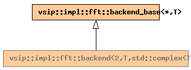

Global Namespace
Inheritance Tree
Inheritance Graph
Name Index
template <
typename
T, int
A
>
class
vsip
::
impl
::backend<2,T,std::complex<T>,A,- 1>
File:
../../../vsip/core/fft/backend.hpp
2D real forward FFT
Primary template:
backend

-
Public Typedefs
T
input_value_type
std::complex<T>
output_value_type
-
Public Member functions
virtual
destructor
~backend
()
virtual
const char*
name
()
virtual
bool
supports_scale
()
virtual
bool
supports_cuda_memory
()
virtual
void
query_layout
(
Rt_layout
<*>&
rtl_in
,
Rt_layout
<*>&
rtl_out
)
virtual
bool
requires_copy
(
Rt_layout
<*>&)
virtual
void
by_reference
(T*
in
,
stride_type
in_r_stride
,
stride_type
in_c_stride
, std::complex<T>*
out
,
stride_type
out_r_stride
,
stride_type
out_c_stride
,
length_type
rows
,
length_type
cols
)
real -> complex (interleaved) by-reference
virtual
void
by_reference
(T*
in
,
stride_type
in_r_stride
,
stride_type
in_c_stride
, std::pair<T*, T*>,
stride_type
out_r_stride
,
stride_type
out_c_stride
,
length_type
rows
,
length_type
cols
)
real -> complex (split) by-reference
-
Public Data members
const int
axis
= A
Generated on Wed Sep 30 14:29:18 2009 by
synopsis
(version 0.12)

 synopsis (version 0.12)
synopsis (version 0.12)